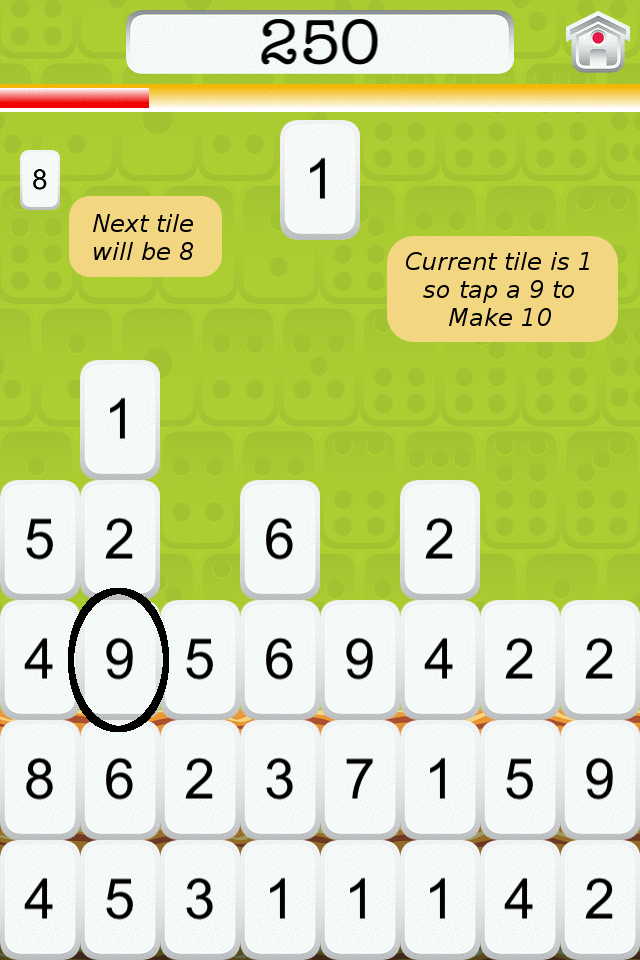

Make 10 as many times as you can before the wall reaches the top!
Break the wall by tapping the tile that will add to 10 with your current tile.

Earn points.

Every time you clear a level, the wall speed will increase or the total will change (or both) depending on your setting and level.
Everyone can have fun while doing math!
- Younger kids can use Mahjong dots to count up the numbers and also adjust the total to a number as small as 5.
- For more of a challenge choose a sum of 60 to practice minutes to the hour or 100 to make change for a dollar.
About us
- Bess Siegal designed and developed Make 10.
- Yancey Labat created the artwork for Make 10.
- Visit the Make 10 website for more information.
Rate it
If you like Make 10, please rate it in the AppStore with 5 stars. Thanks!
Version 1.0